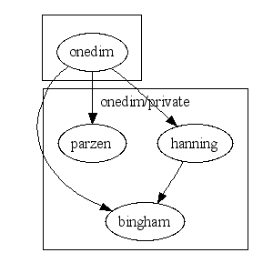

Master index
Index for wafo\onedim\private
Dependency Graph for wafo\onedim\private

Generated on Thu 06-Oct-2005 02:21:14 for
WAFO
by
m2html
© 2003
 Master index
Master index Master index
Master index